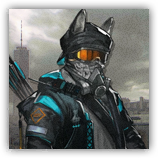

预备干员 - 狙击 Reserve Operator - Sniper
近战 物理；普通 类人（任意；助战者）
|  |
罗德岛预备干员。来自罗德岛的预备干员，尚且缺乏经验，但在经过一定的战术训练和磨合后可以执行更加复杂困难的任务。 狙击。该类型干员属于远程物理输出单位，主要使用弓弩或轻型枪械。擅长对空中单位和中远距离目标进行精确打击。在战场制空、对抗无人机或轻甲单位时效益显著。 |
“明白！重整队形，补充弹药！”
预备干员 - 狙击丨Reserve Operator - Sniper
中型类人（任意；助战者），中立
AC 15（中甲）
先攻 +3（13）
HP 6×等级（等级×d6的生命骰）
速度 30 尺
| 调整 | 豁免 | ||
|---|---|---|---|
| 力量 | 10 | +0 | +0 |
| 智力 | 12 | +1 | +1 |
| 调整 | 豁免 | ||
|---|---|---|---|
| 敏捷 | 16 | +3 | +3 |
| 感知 | 12 | +1 | +1 |
| 调整 | 豁免 | ||
|---|---|---|---|
| 体质 | 10 | +0 | +0 |
| 魅力 | 10 | +0 | +0 |
技能 特技+3+PB，隐匿+3+PB，察觉+1+PB，求生+1+PB
感官 黑暗视觉60尺，被动察觉11+PB
语言 通用语，以及一门任意语言
PB 等于其指引者的加值
特质 Traits
助战抗性 Retainer Resistance。助战者进行任何豁免检定时，均可以加上指引者的熟练加值。
7级：有利射界 Vantagle Point。狙击干员对可见生物发动招牌攻击时，若目标5尺内没有其他生物，或者狙击的位置高于目标20尺及以上，其可以让此次攻击具有优势，前提是目标必须不受到掩护以及环境遮蔽。
动作 Actions
招牌攻击：长弓 Longbow。远程攻击检定：+3+PB，射程180/600尺。命中：2d6+PB穿刺伤害。7级起，狙击在其回合内执行攻击动作时，可以发动两次此攻击。
5级：战术射击 Tactical Shoot（3次/日）。狙击发动一次招牌攻击，若命中则目标的移动速度降低10尺直到其回合结束。此外，狙击可以立即移动10尺而不引发借机攻击。
7级：协同射击 Coordinate Shoot（3次/日）。狙击发动一次招牌攻击，然后狙击30尺内可以听见其声音的盟友可以采取反应，发动一次远程武器攻击，或施展一个1动作戏法。
附赠动作 Actions
3级：攻击强化 Atk Up（3次/日）。直到本回合结束前，狙击进行的招牌攻击在攻击检定上获得+1d4加值，额外造成PB点穿刺伤害。